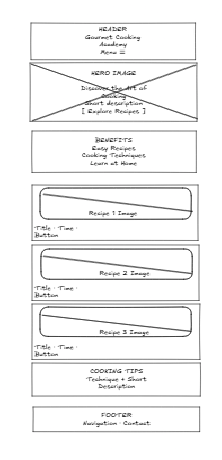
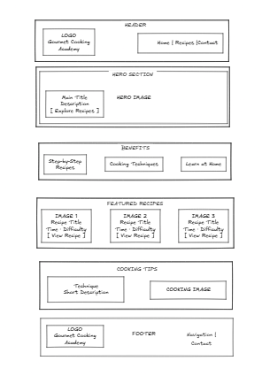

Site Name
Gourmet Cooking Academy
I selected this name because it clearly represents an educational website focused on gourmet cooking. The name is easy to remember and communicates the opportunity to learn culinary skills at home.
Site Purpose
Gourmet Cooking Academy helps beginners and home cooks develop culinary skills through accessible recipes, cooking techniques, and practical instructions.
The website will feature three main pages: Home, Recipes, and Contact.
- Home: Introduces the academy, highlights featured recipes, and presents cooking benefits and tips.
- Recipes: Provides a searchable collection of recipes with ingredients, instructions, preparation time, and difficulty levels.
- Contact: Allows visitors to send questions, suggestions, and feedback.
The recipes will be displayed dynamically using JavaScript. The project will explore the use of a recipe API and provide interactive features such as recipe details and saved favorites.
Scenarios
- What gourmet recipes can I prepare at home with simple ingredients?
- How can I find recipes according to cooking time, category, or difficulty?
- Where can I learn essential culinary techniques to improve my cooking?
- How can I save my favorite recipes for future reference?
Color Scheme
The color palette reflects a professional culinary environment, combining natural green, warm terracotta, cream, and neutral colors.
#244237
Header, footer, headings, navigation
#783E24
Buttons, links, accents, dividers
#F7F2E9
Page backgrounds
#FFFFFF
Recipe cards and content areas
#203027
Paragraphs and recipe instructions
Typography
Georgia
Used for main headings, section titles, and featured recipe names.
Discover the Art of Cooking
Arial
Used for paragraphs, navigation, forms, buttons, ingredients, and cooking instructions.
Learn practical culinary techniques and create delicious gourmet recipes at home.
Home Page Wireframes
These original black-and-white wireframes illustrate the planned responsive layout for the Gourmet Cooking Academy home page.

